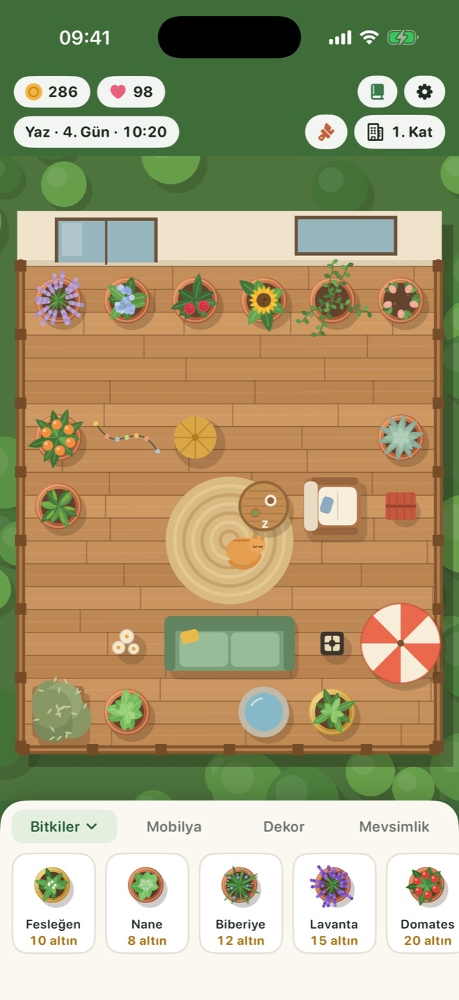
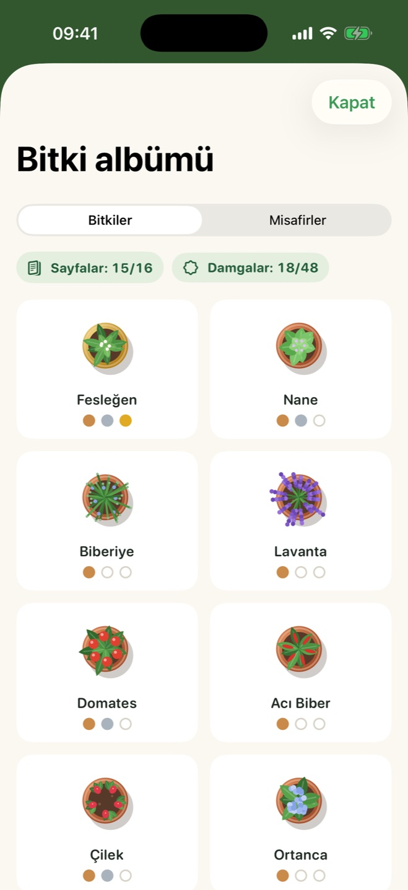
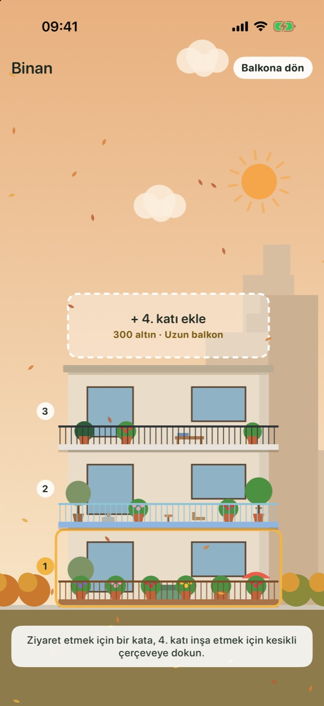

Gerçek zamanlı büyür
Bir oyun günü gerçek bir saat sürer. Gününe sığan kısa, sakin ziyaretler; döndüğünde her zaman hazır bir şey vardır.
iPhone ve iPad için
Bitkiler, çiçekler ve meyveler yetiştir, balkonunu dekore et, mevsimleri takip et ve tüylü misafirlerini ağırla. Her güne biraz huzur.
Bir bitkiyi balkonuna sürükle, susadığında sula ve olgunlaşınca hasat et.
Kanepe, fener, çeşme ve yeni zeminler ekle. Rahat bir balkon daha çok kazandırır ve daha çok misafir çeker.
Uygulama kapalıyken de bahçen büyümeye devam eder. Unutulan bir bitki asla ölmez; sadece biraz su bekler.
Sakin bir günlük ritüel için gereken her şey; seni acele ettiren hiçbir şey yok.
Bir oyun günü gerçek bir saat sürer. Gününe sığan kısa, sakin ziyaretler; döndüğünde her zaman hazır bir şey vardır.
İlkbahar yağmuru bitkilerini sular, yaz güneşi domatesleri olgunlaştırır, sonbaharda yapraklar uçuşur, kışın kar korkuluğu kaplar.
Mobilya ve dekoru bir ızgaraya yerleştir; ahşap deck, mermer ya da mozaik zemine ve yeni bir korkuluğa geç.
Kelebekler, arılar, bir baykuş, bir sincap ve komşunun kedileri uğrar. Her birinin neyi sevdiğini keşfet; belki bir kedi taşınır.
Bitki albümünü büyüme aşamaları ve hasat damgalarıyla doldur, tamamlayınca özel bir limon ağacının kilidini aç.
Altın biriktirip her biri kendi balkon şekline sahip yeni katlar ekle ve binanın mevsimlerle değişmesini izle.
Küçük bir ücret karşılığında tüm katlardaki susamış bitkileri sulayan ve olgun olanları hasat eden bir bahçıvan tut. Dört saatte bir kullanılabilir.
Bahçeni bir adla kaydet ve istediğin zaman geri dön. On kayda kadar saklayabilirsin.
iCloud eşitlemeyi aç, bahçen iPhone ve iPad arasında seninle gelsin. İsteğe bağlıdır ve yalnızca kendi Apple Hesabında kalır.



İkisi için tek bir ücretsiz indirme. iPad'de balkonun daha çok yeri olur ve mahallenin daha fazlası görünür.
Balkon her ekranda ortada kalır, bahçe ise durum çubuğunun çevresinde kenarlara kadar uzanır.
| iPhone | iOS 17 veya üstü |
|---|---|
| iPad | iPadOS 17 veya üstü |
| iPhone Duo | Destekleniyor |
| Fiyat | Ücretsiz. Reklam ve uygulama içi satın alma yok. |
|---|---|
| Hesap | Gerekmez. Çevrimdışı çalışır. |
| İlerleme | Cihazında ve eşitlemeyi açarsan kendi iCloud'unda kaydedilir. |
Balcony Bloom'un sunucusu, analitiği ve reklamı yoktur. Oyunda yaptığın hiçbir şey geliştiriciye ulaşmaz. Gizlilik politikasını oku
Sık sorulan soruları oku ya da bir hatayı bildirmek veya fikir önermek için bir issue aç.